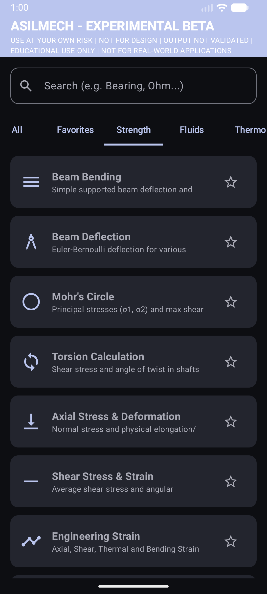

|
ASILMECH Engineering Calculator & Tools 🔧 What is ASILMECH?
ASILMECH is a mobile application designed to help engineering students quickly and effectively perform engineering calculations right from their phone. Whether you're studying for an exam, working on a homework assignment, or just need a quick calculation on the go — ASILMECH has you covered! It's educational in nature: the app is meant to help you learn and understand engineering concepts, not to replace proper design calculations. ⚡ Features
ASILMECH includes calculators and tools across multiple engineering disciplines: ▶ Strength of Materials
▶ Fluids, Thermodynamics & More
▶ Electronics Tools
▶ General
📷 Screenshot
 ASILMECH - Strength of Materials calculators ⬇ Download
⚠ Important Note
ASILMECH is currently in Experimental Beta. Use at your own risk. The app is intended for educational use only and is not for real-world design applications. Output is not validated for professional use. |